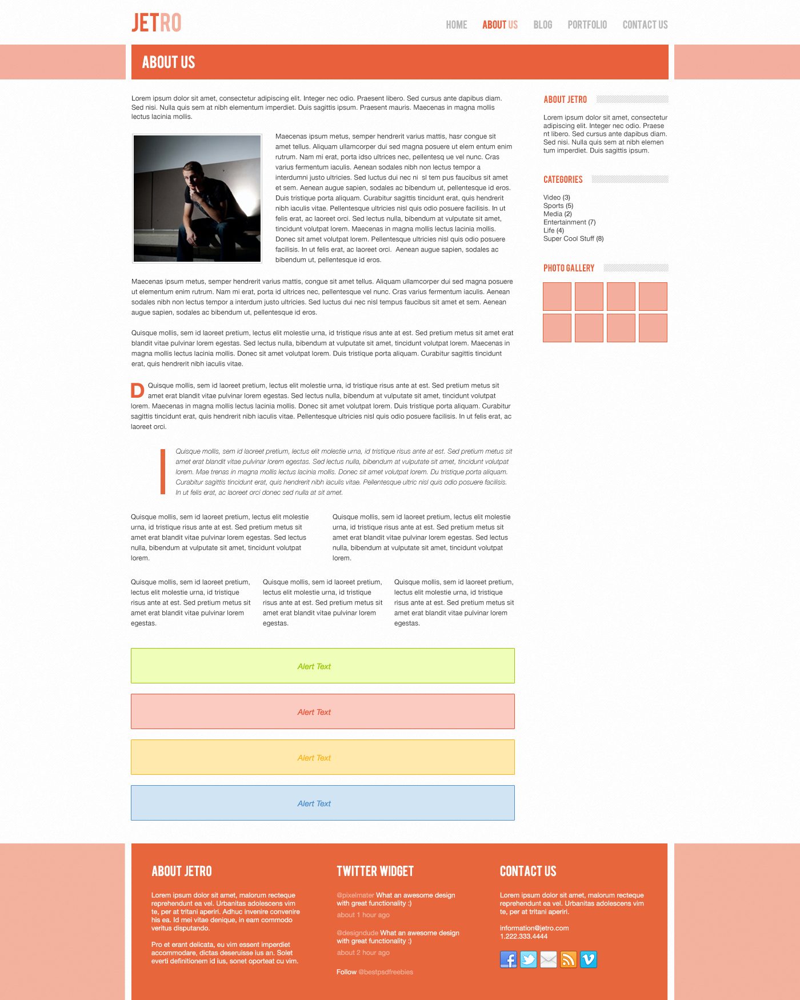

Dirección visual
Define paleta, contraste y ritmo para que el layout comunique intención desde el primer scroll.
CSS Templates Lab
Este template ya no es un bloque genérico: incluye secciones concretas para practicar layout, jerarquía tipográfica y componentes reutilizables desde una base coherente.

Bloques funcionales
Usa esta sección para practicar tarjetas consistentes, spacing y composición responsive.
Define paleta, contraste y ritmo para que el layout comunique intención desde el primer scroll.
Construye bloques reutilizables para evitar estilos aislados y ganar escalabilidad.
Adapta la estructura sin hacks ni quiebres abruptos entre mobile, tablet y desktop.
Muestras
Sección pensada para entrenar grillas, media cards y equilibrio visual entre texto e imagen.
Método
Estructura ideal para practicar listas de pasos, badges y composición secuencial.
Siguiente paso
Bloque final para practicar formularios básicos y distribución de campos en grid.